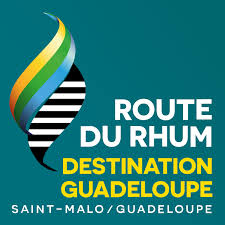

|  | Route du Rhum Saint-Malo - Pointe-à-Pitre 4 novembre 2018 |
(1) Ultime (2) Multi50 (3) Imoca (4) Class40 (5) RhumMulti (6) RhumMono |
(1) Ultime
Longueur supérieure ou égale à
60 pieds sans limitation de taille. Ce sont les géants
des mers ! Les navires autorisés dans cette classe
doivent mesurer au minimum 60 pieds (soit 18,28m).
Désormais, ces bateaux volent au-dessus de l’eau
et les vitesses sont fascinantes. Lors du départ,
cette flotte forme un spectacle impressionnant sur
le plan d’eau, et peut être facilement vus des côtes
bretonnes pour les spectateurs !
Constitué, à ce jour, d’Actual, Banque Populaire, Macif et Sodebo, le Collectif Ultim est une association d’armateurs engagés de longue date dans la course au large. Il a été créé, en 2013, autour d’un projet : relever de nouveaux défis avec de nouveaux grands multicoques et les partager avec le plus grand nombre.
Réunis autour de valeurs sportives comme l’innovation ou la performance, les membres du Collectif Ultim partagent également, dans leur mode de relation, des valeurs plus génériques comme la solidarité, le partage, la générosité ou l’humilité.
Le Collectif a aussi vocation à promouvoir les Ultimes, multicoques qui incarnent partie de l’avenir de la course au large en contribuant, de surcroît, au rayonnement de l’excellence française dans ce domaine.
Très proche de l’ensemble des acteurs nautiques français et internationaux, le Collectif Ultim est naturellement tourné vers les classiques de la course au large mais élabore conjointement un programme d’événements permettant aux Ultimes de naviguer sur de nouveaux bassins maritimes ou sur des formats de course inédits.
Retourner vers le sommaire (2) Multi50
Multi50 : une classe en effervescence
La classe Multi50 change. Professionnalisation des équipes, modernité dans la conception des bateaux,
la classe a opéré un virage en 2016. Devenue plus attractive pour les skippers et leurs partenaires,
la classe Multi50 a fait évoluer sa jauge qui autorise désormais les foils.
Sa flotte s’est recentrée sur les bateaux performants tout en conservant des budgets maitrisés :
ainsi, six Multi50 sont annoncés sur la Route du Rhum 2018.
Retourner vers le sommaire (3) Imoca
Depuis 45 ans, les plus grands marins ont écrit les plus belles histoires et aventures humaines, en navigant autour du monde en solitaire, sans escale et sans assistance.
L’IMOCA (International Monohull Open Class Association) fut créée en 1991 pour mettre en place une structure capable de réglementer les aspects techniques de la course au large en solo ou en double. Dirigée par les skippers et leurs teams, la classe soutient et promeut des courses mythiques telles que le Vendée Globe, La Transat Jacques Vabre et la Barcelona World Race. Aujourd’hui, l’IMOCA est l’une des classes les plus fortes au monde avec plus d’une vingtaine d’équipes actives.
OSM et l’IMOCA ont lancé conjointement le Championnat du Monde IMOCA Ocean Masters, selon un cycle de 2 années, qui intègre tous les principaux événements actuels de la course au large (Vendée Globe, Barcelona World Race, Route du Rhum, Transat Jacques Vabre...), ainsi que de nouvelles épreuves créées tout spécialement pour les IMOCA60, comme la New York – Barcelone ou la New York – Vendée (Les Sables d’Olonne).
En organisant de nouvelles courses dans des régions clés du globe, telles que les USA ou l’Asie, OSM a pour objectif de promouvoir la course au large auprès de nouvelles audiences et de nouveaux sponsors dans le monde entier.
Retourner vers le sommaire (4) Class40
La classe internationale forte de sa mixité
Imaginée en 2004 comme une catégorie facilitant l’accès à la course océanique, la Class40 connaît dès 2006 un engouement exceptionnel,
à peine dix mois après la rédaction de la jauge. A ce jour, ce sont près de 150 voiliers qui sont sortis des chantiers,
avec un panel d’architectes internationaux. Cette classe se fonde sur des règles simples où les évolutions technologiques
sont contraintes pour des raisons financières mais où les recherches d’évolution des formes de carène sont libres et donc extrêmement variées.
Retourner vers le sommaire (5) RhumMulti
La catégorie Rhum
Multicoques rassemble tous les bateaux à deux ou trois
coques d’une longueur comprise entre 39 et 59 pieds et
ne pouvant entrer dans une autre classe de la course.
Chez les Rhum Multi, on retrouve essentiellement des
amateurs, certains plus que bien éclairés d’ailleurs. En
conséquence, on recense une flotte de 21 multicoques
pour le moins hétéroclite, avec des bateaux de croisière
pure, équipés de couchettes et de tout le confort
attenant, pesant parfois plus de dix tonnes, soit jusqu’à
quatre fois plus qu’un A’Capella par exemple dont trois
exemplaires, sisterships du bateau de Mike Birch (le
vainqueur de la première édition de l’épreuve en 1978),
sont engagés cette année.
Retourner vers le sommaire (6) RhumMono
La catégorie des Rhum Mono est
réservée aux monocoques d’une longueur supérieure ou
égale à 39 pieds et ne pouvant entrer dans aucune autre
classe. 17 solitaires ont choisi de s’y engager avec pour
objectif d’arriver de l’autre côté avant toute chose. Chacun
de ces marins s’est préparé au mieux, avec ses moyens,
pour aller au bout de son rêve, mais il va sans dire qu’avec
des montures dont la taille varie de 40 à 60 pieds et dont
les années de construction s’étalent de 1976 à 2009, tout le
monde ne jouera pas le même match.
Retourner vers le sommaire |